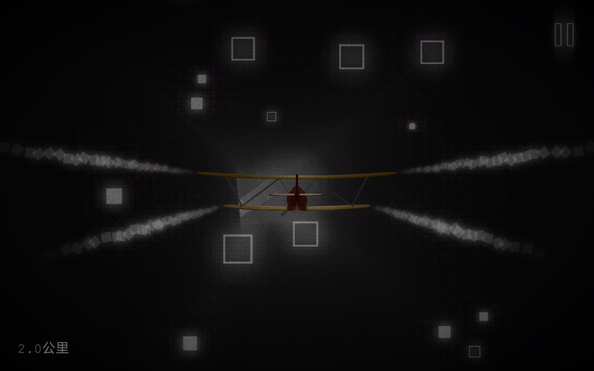

loner
游戏名：loner/远方
很简单的一个游戏，甚至可以说是有些无聊，如若放到现在来让我玩，那我恐怕是玩不下去的。但放在高中竞赛那段时间，却可以说是刚刚好。
游戏的玩法很简单，操纵飞机穿过一个个障碍物，在达到一定的公里数时即可解锁一小段故事。3+1章全部解锁后，就没有新内容了，不过可以解锁“禅模式”，也就是没有障碍物，没有尽头的无尽旅途。想来，“禅模式”才是更符合游戏名的玩法。
76段故事可能反而更像是游戏中最重要的部分（当然不同人，甚至是不同时间都会有不同的理解），现在我有时打开这个游戏仅仅只是为了看一看这个故事。剧情并非多么的惊艳，但是 it's touching 。避免剧透这里就不仔细说剧情了（可看这里loner-story），只能透露是反战题材的（笑
这并非是一个多么完美的游戏，但无论是玩法，画面乃至于音乐，都很适合一个人郁闷无助却找不到人倾诉时阴暗地在角落里消磨时光，短暂地脱离现实，孤独地前往远方。
《loner》 可玩性：3/5 音乐：4/5 画面：4/5 剧情：4/5 总评：3.5/5

tip:据说taptap上的版本收费且有很恶心的广告，建议在google play上下载。